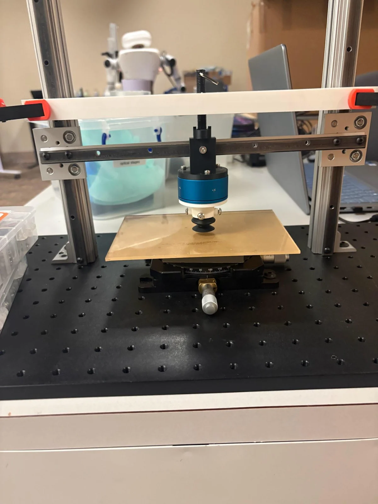
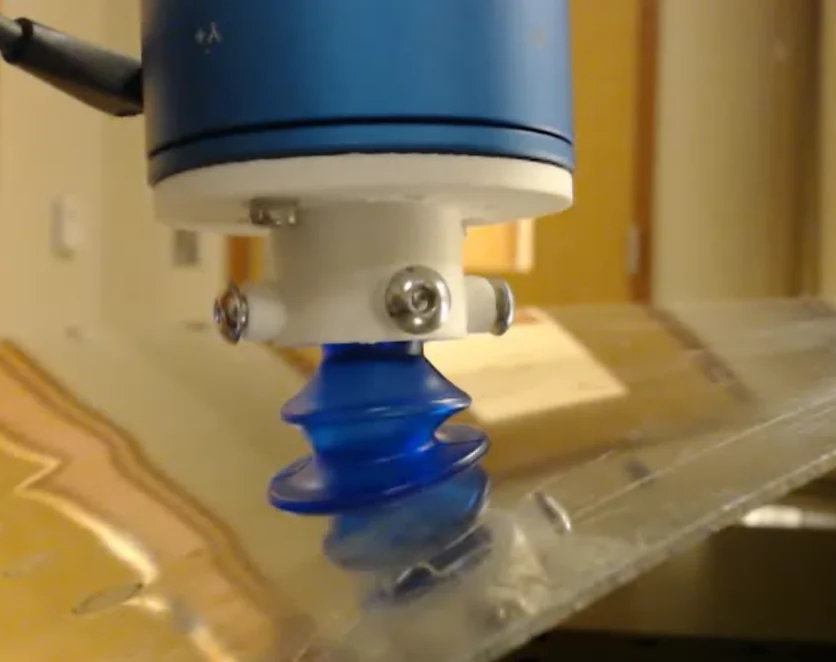
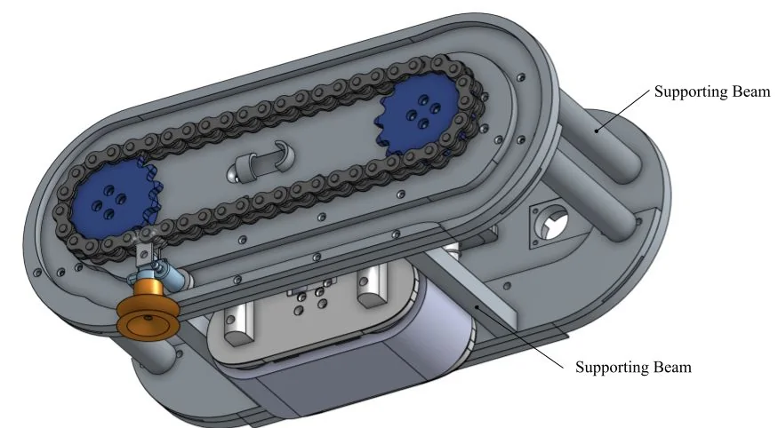
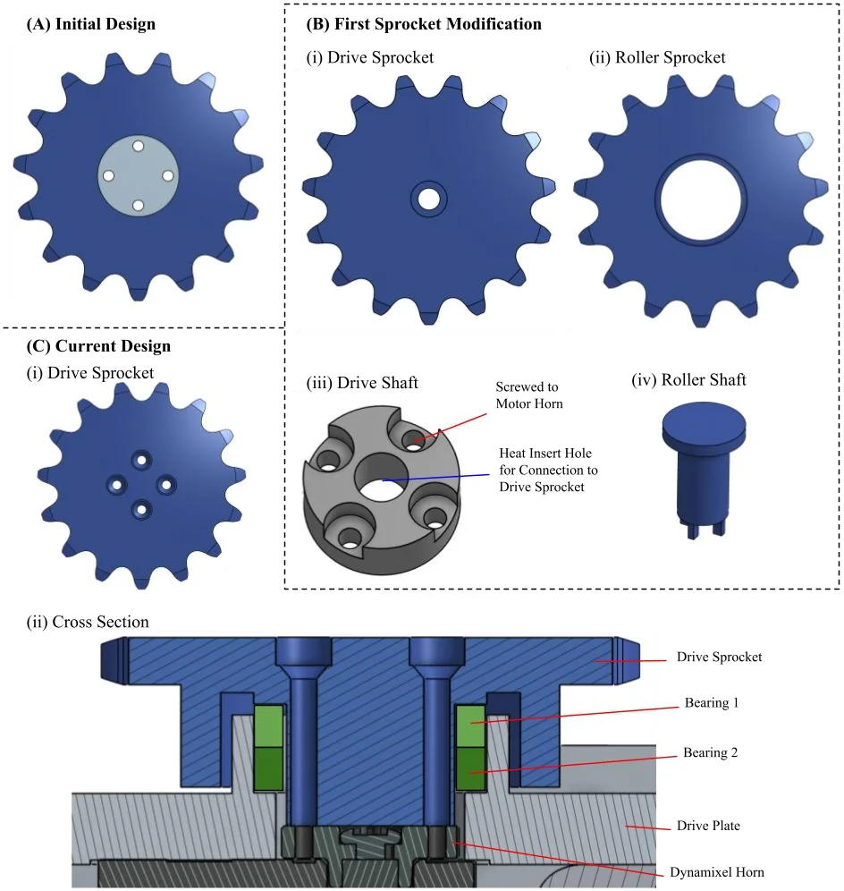
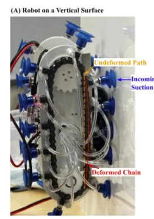
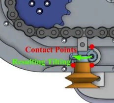
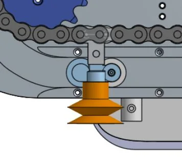
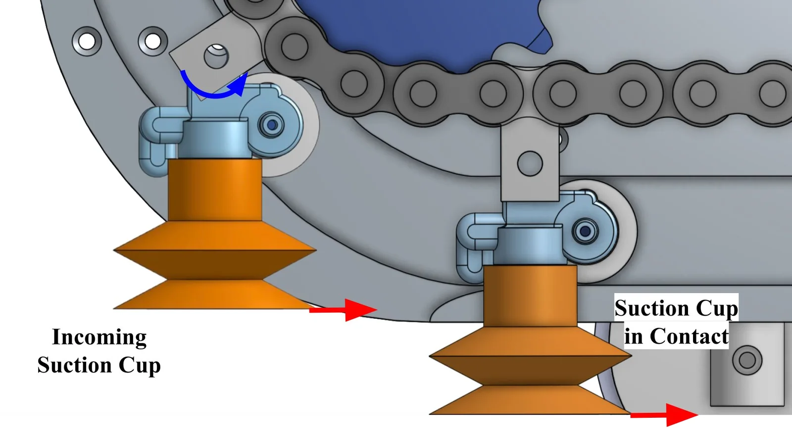
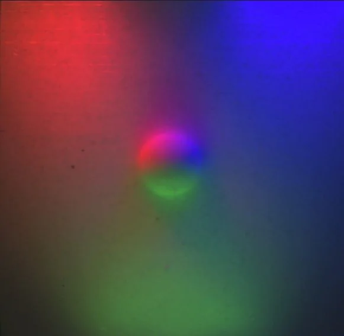
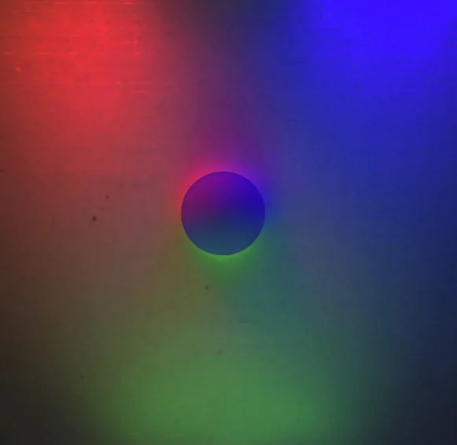

Research · Novel Mobile Robots Lab, UIUC
Suction climbing robot for GelBelt tactile inspection
A robot that carries the GelBelt tactile sensor up walls and across inverted and curved surfaces, so aircraft skins can be inspected by touch at high resolution.

Challenge
Carry a tactile sensor across vertical, inverted, and curved surfaces while pressing it into the surface with at least 10 N.
Approach
Active suction cups on a roller-chain drive, a magnet-switched valve on every cup, and a spring suspension sized from measured cup stiffness.
Where it stands
Adhesion and suspension passed inverted and curved-surface tests. The full robot stays attached from flat to vertical and climbs a vertical panel.
- My role
- Undergraduate Researcher. Adhesion, suspension, drive, pneumatics, and integration
- Timeline
- Aug 2025 – Present
- Lab
- Novel Mobile Robots Lab, with RoboTouch Lab
- Tools
- Force-torque testbed, Onshape, Python, Raspberry Pi 5, Dynamixel
Motivation
Aircraft skins and other large metal or composite structures need regular inspection for defects that can limit performance or safety. Doing it by hand is slow and error-prone.
Our answer is to put a high-resolution tactile sensor on a robot that can drive across the whole structure and collect the data with minimal human effort.
GelBelt is a vision-based tactile sensor. A soft belt rolls over the surface while a camera inside images it from behind, so every frame becomes a detailed map of the surface geometry.
Until now it was moved by a robot arm or by hand, so it could only scan what the arm could reach. We are building a robot that carries it anywhere on the structure, including up walls and upside down.
GelBelt on a robot arm rolling over a circuit board: the tactile image and the reconstructed surface geometry.
Design objectives
- Force and weight: press the GelBelt into the surface with at least 10 N, while carrying about 25 N of sensor, drive, and vacuum hardware
- Surface interaction: keep continuous, even contact for consistent mapping, and cover the full surface in every orientation
- Robust and efficient: tolerate the rivets, seams, paint variation, and dust found on an aircraft wing
Adhesion selection
We tested suction cups on a force-torque rig and chose vinyl cups with active suction. One cup holds more than 9 N in shear, so three can carry the robot, and four touch the surface at once for redundancy. Active suction doubled shear holding over passive. Propellers were ruled out: one motor gave only about 5.2 N of thrust.


Cup on a force-torque sensor over an XY stage


Bellowed suction cup on the acrylic plate
| Material | Pull force (N) |
|---|---|
| Vinyl (selected) | 30.4 |
| Plastic | 26.8 |
| Buna-N rubber | 10.9 |
Suspension and validation
Springs sized from measured cup stiffness (14.4 N/cm) keep the GelBelt pressed in with more than 10 N. The module held on upside down, on a wall, and on a curved aluminum profile, with clean GelBelt images.

Central chassis
With adhesion proven, we built the full robot around a two-level chassis. Spring struts hold the top plate above the drive plate, so the GelBelt keeps its contact force as the cups below compress. The top plate carries the pump, servo controller, and computer, and routes the sensor cable and vacuum tubing.

Assembled and isolated suspension system

Top plate
Pneumatic system
One pump feeds every cup as they travel around the chain, so each cup needs its own valve: open when the cup is on the surface, closed everywhere else. The valve has to handle a rotary joint, seal under vacuum, and let the cup release cleanly.
Each valve is switched by an external magnet along the drive plate. The first version used a steel ball that leaked and stuck. The current one uses an internal magnet and a silicone O-ring, mounts directly to the chain, and held for one minute under a 2 kg load.

Air path: pump in, atmosphere vent, chain mount

Section at the suction-cup thread

Valve CAD

Printed and assembled: plastic valve with a vented screw, suction cup, and nylon bearings that ride the rail
Drive
The cups ride on a roller chain, because a timing belt couldn’t take the twisting load from the robot’s weight. Lifting 2 kg at 4 cm/s needs about 0.32 N·m, well under the Dynamixel’s 0.93 N·m stall torque.
Testing the full robot drove three changes:
- Two motors overloaded, so the drive moved to four Dynamixels
- Sprockets on screw axes wobbled, so each sprocket and shaft became one part on two bearings
- The drive plate flexed, so we added supporting beams


Chain, sprockets, and supporting beams


Initial design, first modification, and the current two-bearing stack
Electronics
A Raspberry Pi runs the robot and streams GelBelt images and motor data over Wi-Fi. It drives four XL-330 motors through a U2D2, and the vacuum pump sits on a mechanical switch.

Guide rails
On a vertical wall the chain sagged. Valves on slack sections tilted and jammed, and incoming cups couldn’t reach the surface or folded their lips when they did.
A guide rail now holds every valve on a fixed path, so the cups meet the surface in one even plane even though the chain isn’t rigid. Its profile gives each incoming cup the same speed along the surface as the cups already attached, and plastic bearings keep friction low.


On a vertical surface the chain sags away from its intended path


Slack lets the valve tilt at its contact points


The valve held on a fixed path


It meets the wall at the same speed as the cups in contact

MiniGelBelt calibration
We are calibrating MiniGelBelt, the sensor the robot carries, so its color images can be turned into surface geometry.


Calibration image


Calibration image
Where it stands
- Adhesion and suspension are validated on inverted, wall, and curved surfaces
- The assembled robot stays attached as its panel tilts from flat to vertical, and climbs the vertical panel
- Next: test full-build contact behavior with suction and magnet valves together
- Then measure: cup attachment success, straight-line stability, GelBelt contact consistency, reconstruction accuracy, motor current by orientation, turning radius, and weight margin
- After that: curves and steering, and a paper